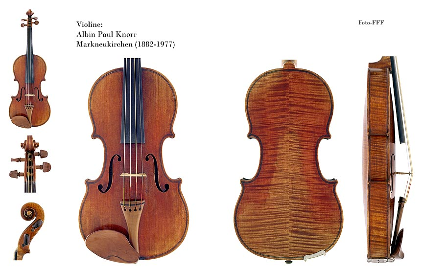
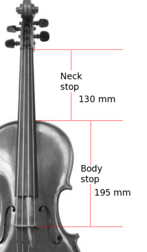
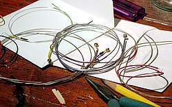
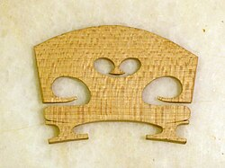

Understanding the Parts of a Violin
The violin is a string instrument that is played with a bow. It has four strings and is known for its high-pitched sound.main parts of the violin include the:
- Body
- Neck
- Strings
- Bridge
- Tailpiece
|
 |
 |
 |
 |
|
Each part plays a crucial role in producing the instrument's unique sound and tone.
Detailed information about each part can be found in this link: Violin Construction and Mechanics.